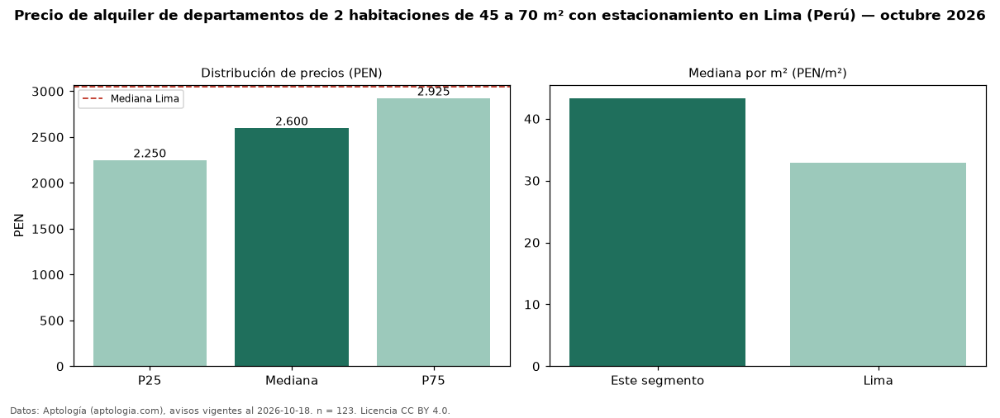

Precio de alquiler de departamentos de 2 habitaciones de 45 a 70 m² con estacionamiento en Lima (Perú) — octubre 2026
Con 123 avisos vigentes, el canon mediano de departamentos de 2 habitaciones de 45 a 70 m² con estacionamiento en alquiler en Lima (Perú) es PEN 2.600 al mes. Eso es 8 % más que la mediana de los departamentos de 2 habitaciones de 45 a 70 m² en alquiler de Lima (PEN 2.400, n = 287); este segmento reúne el 43 % de esos avisos. Por metro cuadrado, la mediana es PEN 43,33/m² al mes (n = 123), 8 % por encima de los departamentos de 2 habitaciones de 45 a 70 m² en alquiler de Lima (PEN 40,00/m²). El área mediana anunciada es 60 m². La cuota de mantenimiento o condominio mediana declarada es PEN 250 al mes (n = 49), aparte del canon. La mediana de todos los departamentos en alquiler de Lima es PEN 3.050 (−15 % de diferencia). La mitad central de los avisos va de PEN 2.250 a PEN 2.925 (razón 1,3), una dispersión baja. Datos: Aptología (aptologia.com), CC BY 4.0 — https://www.aptologia.com/pe/alquiler/lima. Archivos: PDF, CSV con las cifras y gráfica PNG.

| Avisos únicos | 123 |
|---|---|
| Percentil 25 | COP 2.250 |
| Mediana | COP 2.600 |
| Percentil 75 | COP 2.925 |
| Mediana por m² | COP 43 |
Fuente: avisos vigentes de portales inmobiliarios recopilados por Aptología, deduplicados (mínimo 30 avisos únicos por celda). Precios pedidos, no cerrados. Fecha: 2026-10-18.